Halloween Map — V0.9.2
Comparaisons mobile / desktop de la même identité bleu nuit, violet et ambre. Captures Playwright avec données fictives et horloge contrôlée. Les fonds de carte vides proviennent des fixtures de test ; cette revue porte sur les panneaux et les fiches, pas sur la cartographie de production.
Le décor restauré accepté est conservé depuis la revue V0.9.1. Aucun effet de parallaxe sur ces pages et panneaux.
Identité et installation
Connexion
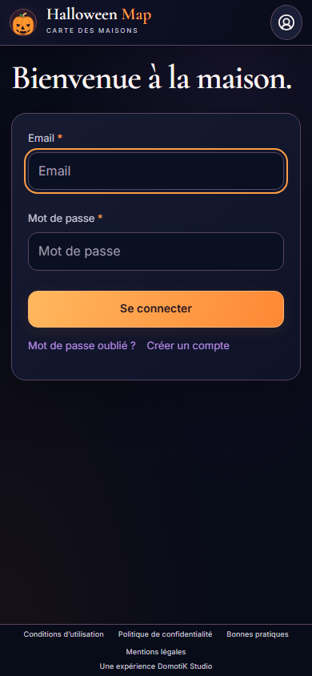
390 × 844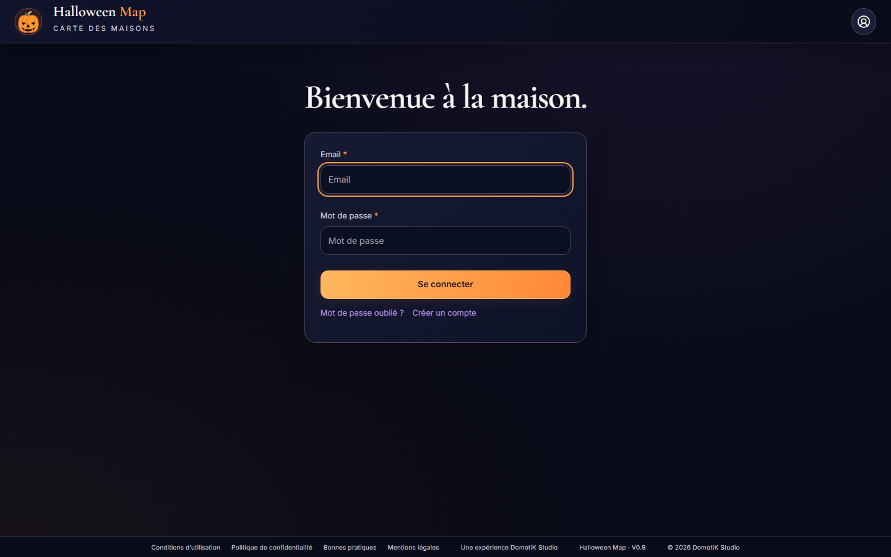
1440 × 900Inscription
Menu
Compte
Participation
Collecte individuelle et liste de maisons
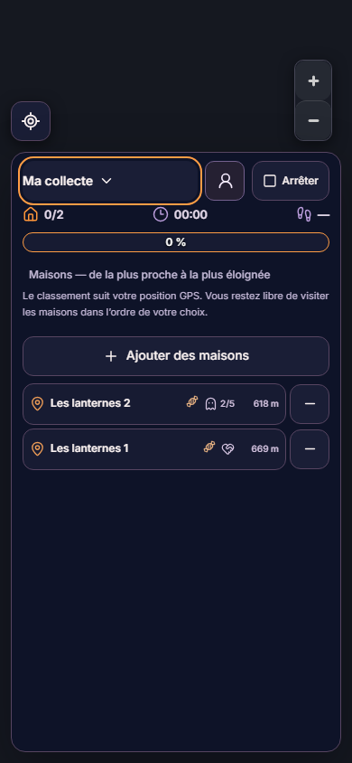
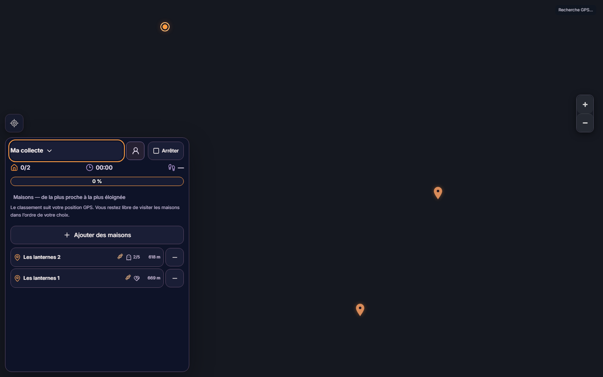
Fiche maison
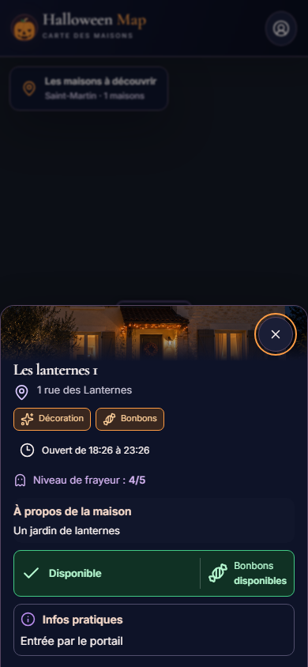
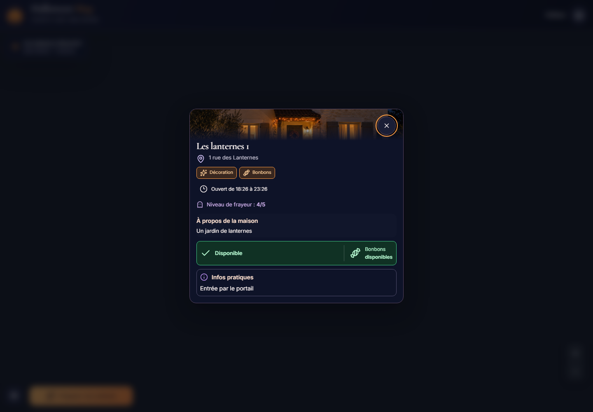
Collecte terminée
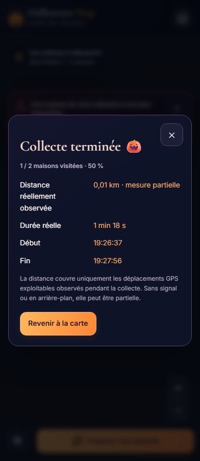
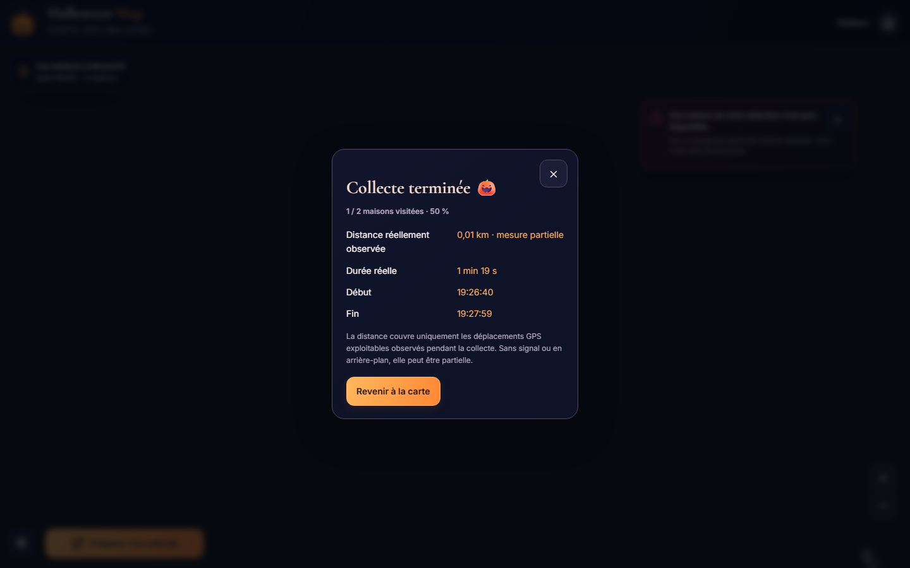
Confidentialité
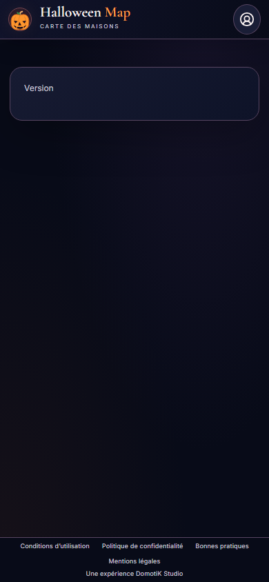
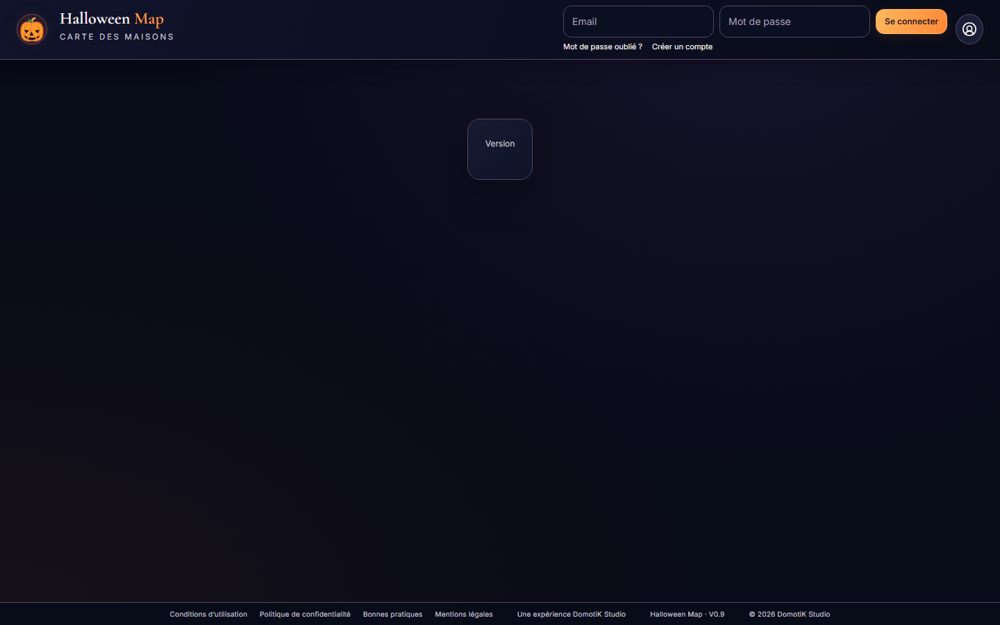
Administration — thèmes conservés
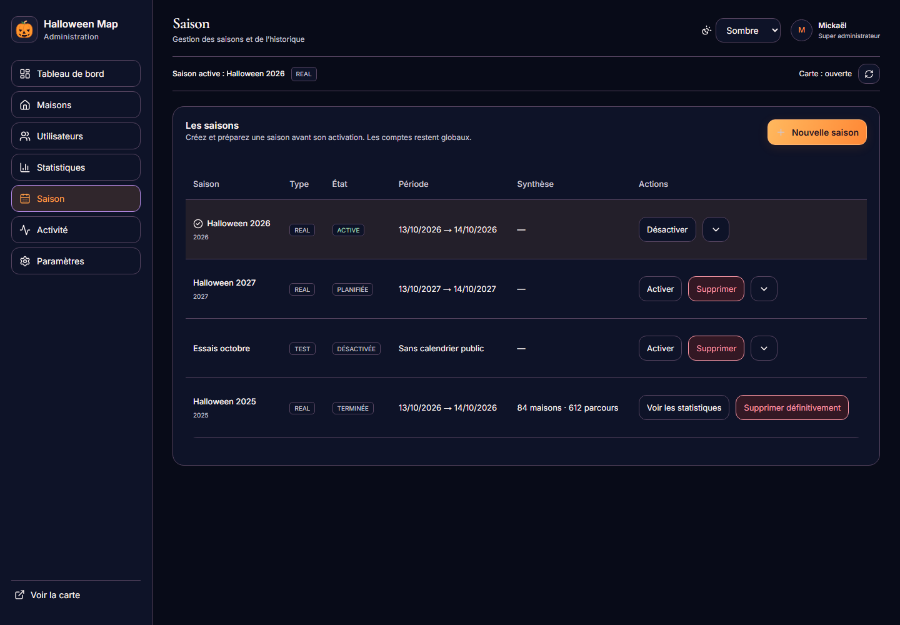
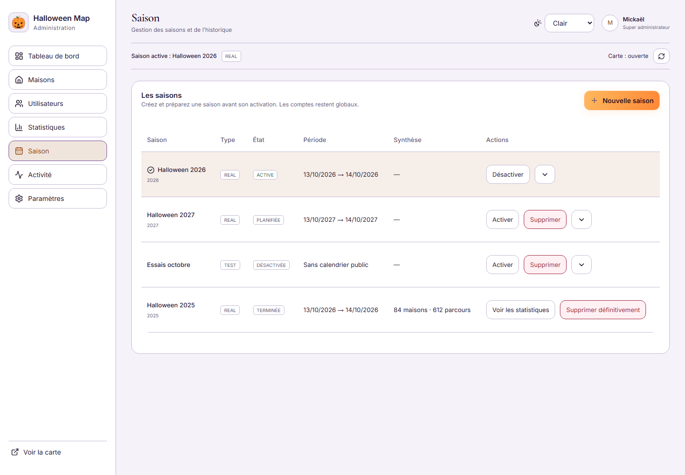
Mot de passe oublié mobile · desktop · À propos mobile · desktop · Hors connexion · Préparation de la collecte